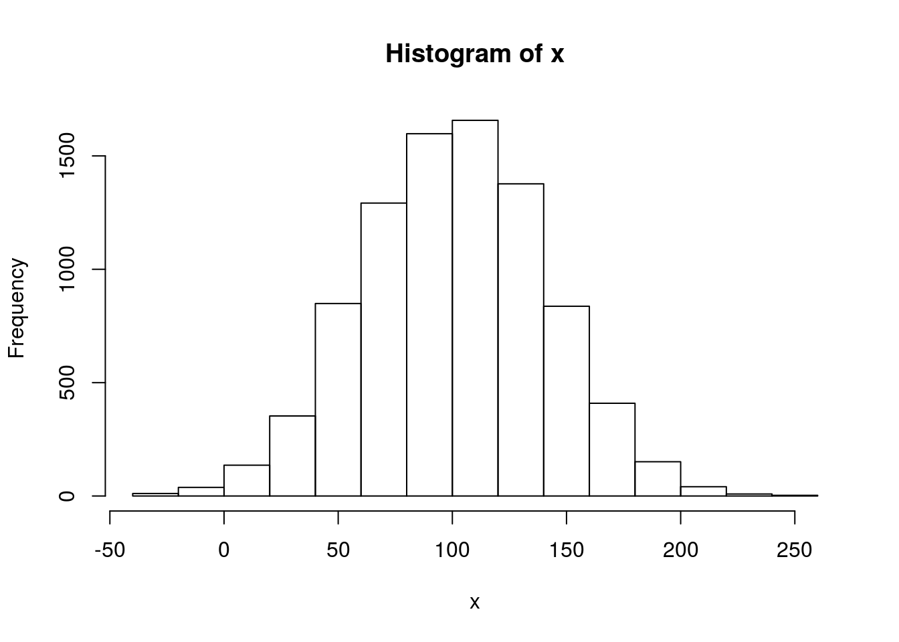

Kapitel 5 Motivation or “Why should I use R”?
- R is able to handle large data sets.
- R uses vector calculation instead of
- copying a formula (Excel)
- loops (other programming languages) –> clear code, less error-prone
- Easy sub-setting, filtering of data sets
- Easy, nice plotting
- Statistics (should be number one of this ranking but I did not yet use statistics much.)
5.1 Large Data Sets
# Create a large matrix with 10 rows and 300 columns
mtx <- matrix(rnorm(3000, 50), ncol = 300)
# Create a data frame
dfr <- data.frame(x = 1:10, y = mtx)
# Define the path to a CSV file
file <- file.path(wdir, "fields_300.csv")
# Write the data to the file
write.table(dfr, file, sep = ";", row.names = FALSE)
# Read back the first lines of the file (shortened to 60 characters)
substr(readLines(file, 5), 1, 60)## [1] "\"x\";\"y.1\";\"y.2\";\"y.3\";\"y.4\";\"y.5\";\"y.6\";\"y.7\";\"y.8\";\"y.9\";\"y"
## [2] "1;51.1394540262207;50.1564099398422;51.0456277985896;50.6142"
## [3] "2;47.8490299446612;48.9905449608972;49.3850362910198;50.0575"
## [4] "3;49.9796819169502;50.0267676249016;50.5965566619536;51.3675"
## [5] "4;49.7687479612058;51.23973158636;49.2302774230553;50.430821"5.2 Vector calculation
This is a real strength of R!
# Simple: create a sequence of numbers 1:20
1:20## [1] 1 2 3 4 5 6 7 8 9 10 11 12 13 14 15 16 17 18 19 20Is there an Excel equivalent? …
Ok, “easy” also in Excel.
What about the following?
x <- 1:100000
head(x)## [1] 1 2 3 4 5 6tail(x)## [1] 99995 99996 99997 99998 99999 100000Is there an Excel equivalent? … ???
- Slower (is there a fast method to do?)
- limit at 65536
But look, Excel (version 2010) shows the number of values, mean and sum!
In R, we can do the same, using the functions length(), mean(), and sum(), respectively:
rng <- 1:65536
length(rng)## [1] 65536mean(rng)## [1] 32768.5sum(rng) # [1] NA## Warning in sum(rng): Integer-Überlauf - nutze sum(as.numeric(.))## [1] NAWhat’s up, R, are you losing?
But look, R speaks to you (see the warning above). Does Excel speak to you? R tells us what to do. So let’s do, what R proposes:
sum(as.numeric(rng)) # [1] 2147516416## [1] 2147516416Aha, like that it works!
Let’s say it’s a draw - as you want…
What about the sum of elements 1, 3, 5, …, 65536?
sum(seq(1, 65535, by = 2)) # 1073741824## [1] 1073741824The same in Excel?
Not so easy, but possible.
Again, what happens if by mistake I delete/change numbers in between?
Multiply the whole column with 1000, e.g. for unit conversion
rng1000 <- rng * 1000What about multiplying only every second number with 1000?
rng1000.2 <- rng
indices <- seq(1, 65535, by = 2)
rng1000.2[indices] <- rng[indices] * 1000This is even possible in Excel…
But again: every cell could contain a different formula…
5.3 Easy sub-setting, filtering of data sets
5.4 Statistics
5.5 Timestamps
# As easy it is possible to create vectors of timestamps, e.g.
t1 <- as.POSIXct("2010-01-01", tz = "UTC")
t2 <- as.POSIXct("2011-01-01", tz = "UTC")
tstamps <- seq(t1, t2, by = "60 min")
# How many timestamps did we get?
length(tstamps) # 8761## [1] 8761# What number did we expect?
365 * 24 # 105120## [1] 8760Who wants to explain the difference of one?
Let’s write the timestamps to a database table, together with random numbers, normally distributed around 100 with a standard deviation of 40
x <- rnorm(n = length(tstamps), mean = 100, sd = 40)5.6 Easy, nice plotting
Let’s have a look at the distribution
hist(x)